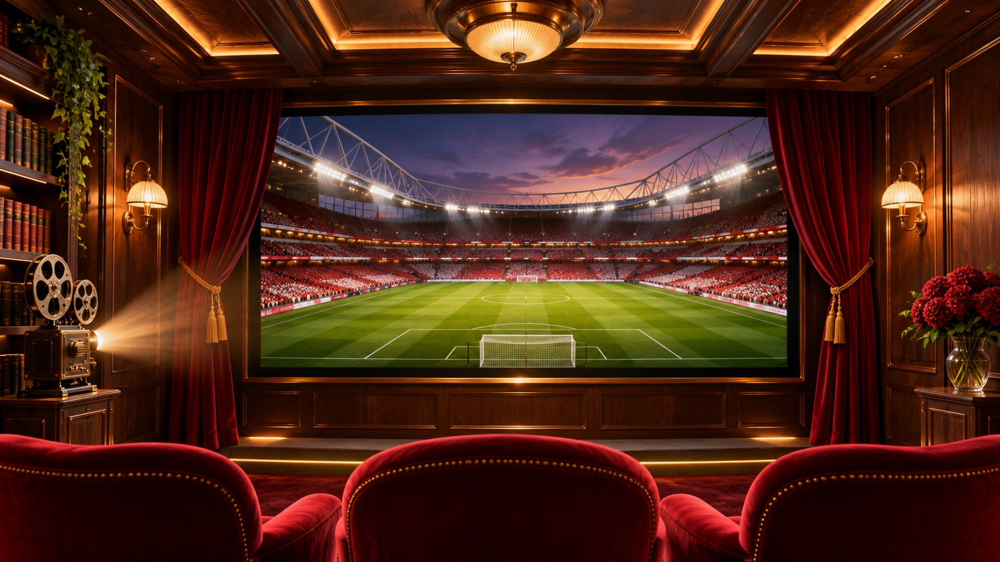

YOUR MOMENT.
YOUR PLAYER.
YOUR TEAM.
21 students. 42 physical cards. Two cards each.
Shuffle once, then reveal the next classroom number.
Use classroom numbers 1–21. No names are entered or saved. Check two physical cards per student at the table.
Find your player.
Discover their story.
Explore a player’s country, position and superpower. When your draft number is called, choose an available physical card at the table.
SIX STORIES.
ONE TEAM.
Two Tony Adams. Two Sol Campbell. Two Arsène Wenger.
Six different stories. A way to lead in every one.
Captain, choose a mystery shield.
Now it’s your turn
to lead.
Help your teammates. Stay calm. Believe in each other.
Ceremony results
Lights down. Leaders rise.
Choose the moment that inspires your team. Teacher preview first.

Official Arsenal videos open in their own player. Nothing plays or contacts YouTube here.
Select a story to begin teacher screening.
Teacher screening notes
Review footage, audio, captions, ads and autoplay before projection. Official videos open in their own player because the owner blocks embedded playback. Opening a source contacts that external service. The review checkbox is for this exact selection and this session only.